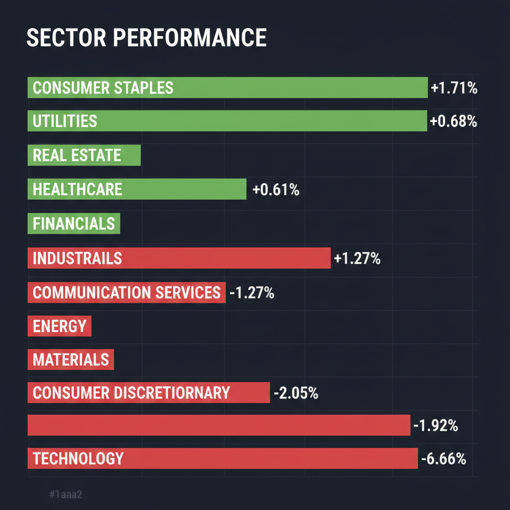
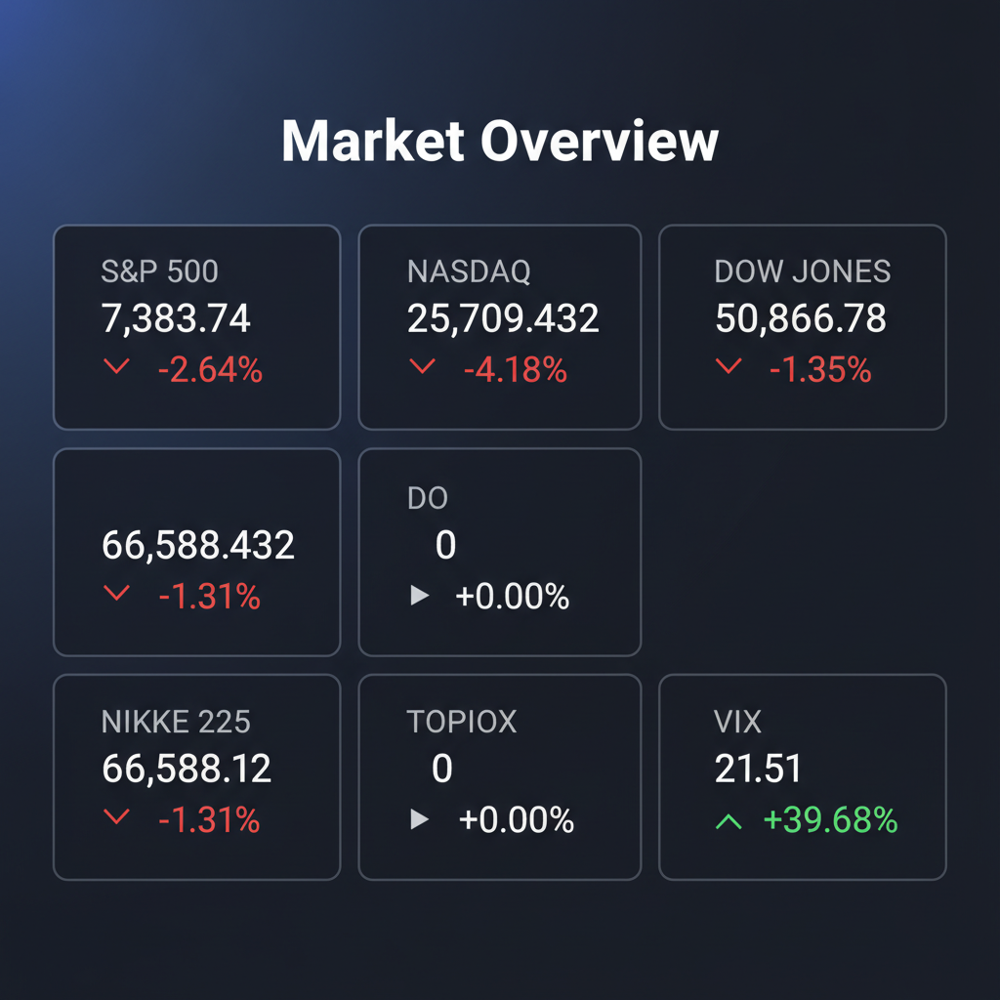

各エージェントがWeb調査結果を踏まえて独立に10段階評価した結果です。平均7以上=強気、4〜6.9=中立、4未満=弱気。
| 銘柄 | ファンダメンタルズアナリスト | テンバガーハンター | マクロエコノミスト | テクニカルストラテジスト | リスクマネージャー | 平均 | 判定 |
| BA | 5 品質問題抱えつつも受注残は豊富 | 6 受注残高は魅力的だが品質問題は懸念 | 5 受注残豊富だが品質問題は懸念 | 5 受注残豊富も品質問題と財務リスクあり | 4 品質問題で先行き不透明、キャッシュフロー懸念 |
5 | 中立 |
| PL | 2 巨額増資で希薄化リスク大 | 3 赤字継続、増資で株主価値毀損リスク | 3 増資リスクと赤字継続で警戒 | 2 巨額増資で希薄化リスク高く投機的 | 2 希薄化リスク大、赤字継続で警戒 |
2.4 | 弱気 |
| MOBX | 1 財務極端に悪く投機的 | 1 財務極めて脆弱、投機的リスク高 | 1 財務脆弱性高く投機的リスク大 | 1 赤字垂流しで財務極めて脆弱 | 1 財務脆弱、買収で投機性高まる |
1 | 弱気 |
エージェントが推奨した中小型株について、Google検索で最新情報を調査した結果です。
ボーイング（BA）に関する投資判断に必要な最新情報をまとめます。
ボーイング（The Boeing Company）は、米国バージニア州アーリントンに本社を置く世界最大の航空宇宙機器開発製造会社です。1997年のマクドネル・ダグラス社買収により、現在では米国唯一の大型旅客機メーカーとなり、欧州のエアバス社と世界の航空機市場を二分する巨大企業として位置づけられています。
事業内容は多岐にわたり、民間航空機の開発・製造・販売を行う「民間航空機部門（Commercial Airplanes）」、防衛装備品や宇宙システム、政府向け航空機などを手掛ける「防衛・宇宙・安全保障部門（Defense, Space & Security）」、そして整備、部品供給、訓練、デジタル運航支援などを提供する「グローバルサービス部門（Global Services）」の3つの主要セグメントで構成されています。
現在の時価総額は、約1,705億ドルから1,719.6億ドルで推移しています（2026年6月5日現在）。 世界市場におけるポジションとしては、2024年の旅客機・航空機・リージョナルジェット業界の市場シェアで、エアバスが25.42%で1位、ボーイングが10.82%で2位となっています。特に中大型機においては両社がシェアをほぼ二分しています。
ボーイングが2026年4月22日に発表した2026年第1四半期決算は以下の通りです。
* 売上高: 222億ドル（前年同期比14%増）となり、アナリスト予想の219.9億ドルを上回りました。 * 純損益: 700万ドルの赤字（前年同期は3,100万ドルの赤字）で、2四半期ぶりに最終赤字となりました。 * 1株当たり損失（コア）: マイナス0.20ドルと、予想のマイナス0.66ドルを大幅に上回る改善を示しました。 * 民間航空機納入数: 143機（前年同期130機から増加）。 * フリーキャッシュフロー（FCF）: マイナス15億ドルと、予想のマイナス26.1億ドルよりも良好な結果となりました。 * 総受注残高: 6,950億ドルに達し、民間航空機部門だけでも5,760億ドルの受注残を抱えています。
セグメント別では、民間航空機部門は赤字が継続しているものの、防衛・宇宙・安全保障部門とグローバルサービス部門は増収増益を記録しました。 同社は、2025年に売上高895億ドル、民間航空機納入600機と2018年以来の高水準に回復し黒字化を達成しましたが、これはDigital Aviation Solutionsの売却益の影響が大きく、民間航空機部門は依然として大幅な赤字です。 ボーイングは、2026年通期のフリーキャッシュフローが10億ドルから30億ドルの黒字に転じるとの見通しを維持しています。
* 2026年6月5日: ボーイングのCEOであるケリー・オルトバーグ氏は、ワシントン州エバレット工場に新設した737 MAXの最終組立ラインを2026年7月6日より正式稼働させる計画を明らかにしました。これにより、月産47機体制から2027年中には月産52機体制、将来的には63機体制への増産を目指すとしています。また、737 MAX 10の型式証明については、2026年末までに連邦航空局（FAA）の承認を得られる見込みであると発言しました。 * 2026年6月3日: ボーイング株は3.05%下落しました。これは、航空宇宙業界に影響を与え続けている生産上の逆風や、主要プログラムである777Xの型式証明取得の遅延（2027年までずれ込む見通し）、737 MAXの配線の傷による引き渡し遅延といった品質管理問題への懸念が主な要因とされています。また、NASAがボーイングのスターライナー計画を将来の運用に向けた「見直し対象」としたことも市場の不安を誘いました。 * 2026年6月2日: 最新鋭大型ワイドボディ機「777X」の型式証明（TC）取得が、2026年後半から2027年にずれ込む公算が大きいと報じられました。 * 2026年6月4日: ボーイング株は3.77%上昇しました。フランクフルト空港で発生したルフトハンザ航空の787型機の前脚折損事故は局地的な事象と見なされ、ボーイングの全般的な進展や受注見通しに対する市場の好意的な反応を大きく冷え込ませるには至らなかったようです。また、FAAが737 MAXの月産47機への増産を承認したことも好材料として挙げられました。
現在、アナリストのコンセンサス評価は「買い」または「強気買い」となっています。 25人のアナリストによる12ヶ月間の平均目標株価は270.00ドルであり、最高目標株価は300.00ドル、最低目標株価は230.00ドルです。 この平均目標株価に基づくと、現在の株価に対して約24.14%の上昇余地があるとされています。 一部のアナリストは、2026年にオペレーションの安定化に伴うフリーキャッシュフローの大幅な増加を予想し、「買い」の格付けを付与しています。 一方、Simply Wall Stの2026年5月23日時点の分析では、現在のボーイング株価219.02ドルは、想定フェアバリュー206.79ドルをやや上回っており、5.9%割高と評価されています。
* 生産上の課題とプログラムの遅延: * 777Xの型式証明取得が2027年までずれ込む見込みであり、将来の引き渡しスケジュールやキャッシュフロー予測に影響を与える可能性があります。 * 737 MAXの配線の傷による引き渡し遅延など、品質管理の問題が引き続き課題となっています。 * 737 MAX 7およびMAX 10の認証も2026年後半に予定されており、初納入は2027年となる見込みです。 * 民間航空機部門は依然として赤字が継続しています。 * 財務上の懸念: * 2026年第1四半期時点で約472億ドルの連結債務を抱えており、財務の柔軟性が制限されています。フリーキャッシュフローの正常化目標も2027年まで後送りされる可能性があります。 * スピリット・エアロシステムズの戦略的買収は、2025年末時点で総負債を541億ドルに増加させました。 * デット・エクイティ・レシオが9.87と非常に高く、企業価値が負債側に大きく偏っています。 * 競合: 欧州のエアバス社との競争が激しく、特に中国市場では国産旅客機の開発も進んでおり、市場シェアに変化をもたらす可能性があります。 * 規制: 連邦航空局（FAA）からの厳しい生産上限規制や監査が継続しており、生産計画に影響を与える可能性があります。 * 安全性と信頼性への懸念: 過去の737 MAX墜落事故や最近の品質問題は、投資家心理や顧客からの信頼に長期的に影響を及ぼす可能性があります。 * 地政学的リスク: 中国からの航空機発注が外交圧力の道具として利用される可能性があり、受注状況が不透明になることがあります。
ボーイングの株価は、直近（2026年6月上旬）では変動が見られます。777Xの遅延や品質管理問題への懸念から下落する日がある一方で、737 MAXの生産増強が承認されたことや、一部の事故が局地的なものと判断された際には上昇する動きも見られます。 Investing.comによると、現在の株価は216.27ドルです（約6時間前時点）。 Google Financeによると、過去52週間の株価は176.77ドルから254.35ドルの間で推移しています。 直近1ヶ月から3ヶ月にかけては株価リターンが下落基調にあるものの、過去1年および過去3年のトータルリターンはプラスを維持しています。 テクニカル分析では、MACDは中立または売りのシグナル、RSIは中立、Williams%Rは売られ過ぎの状態を示唆しています。
Planet Labs PBC (NYSE: PL) に関する投資判断に必要な最新情報は以下の通りです。
1. 企業概要 Planet Labs PBCは、地球観測衛星ネットワークの世界的リーダーであり、日々の地球データと洞察を提供する衛星画像サービスプロバイダーです。ウェブジオプラットフォームを通じて衛星データと基礎的な分析を提供しています。
* 時価総額: 2026年6月4日時点で約155.14億ドルです。 * 業界でのポジション: 地球観測衛星ネットワークの世界的リーダーとして、特に防衛・情報分野において競争環境の中で有利なポジションを確立しています。
2. 直近の業績・決算情報 同社は2026年6月4日に2027年度第1四半期（2026年2月1日～4月30日）の決算を発表しました。
* 売上高: 9,420万ドルで、アナリスト予想の9,000万ドルを上回りました。前年同期比で42%増となり、過去最高の売上高を達成しました。 * 利益: 調整後1株当たり損失は0.03ドルで、市場コンセンサス予想の0.04ドルの損失よりも良好な結果でした。しかし、依然として最終損益は赤字です。 * 成長率: 売上高成長率は前年同期比42%に加速し、12四半期ぶりの最高成長率を記録しました。EMEA地域での売上高は前年同期比88%増、防衛・インテリジェンス部門の売上高は同68%増と特に顕著な伸びを見せています。
3. 最新ニュース・材料（直近1-2週間） * 2026年6月4日に発表された2027年度第1四半期決算では、売上高が予想を上回りました。 * 同社は、時価発行増資（ATMオファリング）を通じて最大15億ドル相当の普通株式を随時売却するための株式分配契約を締結したと発表しました。この動きは、既存株主の持ち分を約9％希薄化させる可能性があります。 * 決算が市場の過度な期待に届かなかったこと、および15億ドルの新株発行計画が発表されたことを受け、同社の株価は6月上旬に35%急落し、過去1年間の上昇分の大部分を吹き飛ばしました。 * アナリストのニードハムは、好決算を受けて目標株価を40ドルから53ドルに引き上げ、「買い」の投資判断を維持しました。 * チェコおよびギリシャ政府とそれぞれ100万ドルを超える契約を締結し、政府系顧客基盤を急速に拡大しています。
4. アナリスト評価・目標株価 * アナリストのコンセンサス評価は「買い」であり、10人のアナリストのうち7人が買いを推奨、1人が売り、3人が保持を推奨しています。 * アナリストの平均目標株価は35.50ドルで、2026年6月4日時点の株価（43.13ドル）から18%の下落余地を示唆しています。 * ニードハムは目標株価を53ドルに引き上げ、「買い」を維持しています。 * ノースランド・キャピタルは目標株価を33ドルから50ドルに引き上げています。 * InvestingProの分析によると、現在の株価はフェアバリューを上回って取引されており、割高銘柄リストに掲載されています。
5. リスク要因 * 財務上の懸念: Planet Labs PBCは創業以来、一度も純利益を計上しておらず、依然として最終損益は赤字の状態です。 * 株主希薄化: 最近発表された時価発行増資（ATMオファリング）による最大15億ドルの株式売却は、既存株主の持ち分を希薄化させる可能性があります。 * 株価の過敏性: 現在の時価総額は数年にわたる積極的な成長を織り込んでいると見られ、わずかな失策にも株価が過敏に反応しやすい状態にあります。 * 競合: 宇宙ベースのデータおよびサービス市場は競争が激しく、防衛・情報分野などでの競争圧力がリスクとなりえます。
6. 株価の最近の動き * 2026年6月5日の週に株価が35%急落しました。 * 2026年6月4日の決算発表後、株価は下落して取引されました。プレマーケットでは12.24%下落し、閉場後も4.04%下落しました。 * 過去1年間で982.84%という驚異的なリターンを記録していましたが、最近の急落により上昇分の大部分が吹き飛ばされています。 * 52週高値は51.76ドル、52週安値は4.90ドルです。
MOBX（モビックス・ラボズ）に関する最新情報は以下の通りです。
* 事業内容: 高度なワイヤレスおよび有線接続、無線周波数（RF）、スイッチング、電磁干渉（EMI）フィルタリング技術向けのコンポーネントとシステムを設計、開発、販売しています。具体的には、ミリ波5G通信、ミリ波イメージング、ソフトウェア定義無線、カスタムRF集積回路などの無線システムソリューション、およびEMIフィルターインサートやフィルター付き・フィルターなしコネクタなどの相互接続製品を提供しています。これらの製品は、民生用商用、産業用、自動車、医療、航空宇宙、軍事、防衛などの幅広い市場で使用されています。 * 時価総額: 2026年5月時点で、約3,225万ドルから3,446.5万ドルです。 * 業界でのポジション: 電子テクノロジーセクターの半導体業界に属しています。
* 2026年度第2四半期（1-3月期）: 2026年5月20日に発表された決算によると、売上高は前年同期比61.4％減の97万ドルでした。営業赤字は前年同期の782万ドルから縮小し、609万ドルとなりました。1株あたり損失（EPS・希薄化後）は0.59ドルで、前年同期の0.57ドルから悪化しています。 * 2025会計年度（9月30日終了）: 予備的な売上高は970万ドルから990万ドルと報告され、前年同期比で54％の大幅な増加を記録しました。粗利益率は約50.2％～50.5％に拡大し、調整後営業損失は約850万ドル～860万ドルで47％改善しました。 * 通期純利益: 約-4,613万ドルです。 * 通期売上高: 約991万ドルです。 * 収益性: 収益性ランクは1/10と非常に低く、一貫した利益を生み出すのに苦労していることを示唆しています。
* 米軍用ドローンメーカーVision Aerial買収計画: 2026年6月4日、モビックス・ラボズは米軍用ドローンメーカーであるVision Aerialの買収計画を発表しました。これにより、同社の株価は急騰しました。この買収は、国内のドローンプラットフォームに対する需要の高まりを取り込み、ミッションクリティカルな分野でのM&Aを通じた成長戦略の一環とされています。 * レアアース企業買収に向けた意向書署名: 2026年5月14日、同社はレアアース元素、重要鉱物、エネルギー貯蔵サプライチェーンを専門とする米国企業Special Project Delivery LLCの買収に向けた非拘束力的な意向書に署名したと発表しました。このニュースにより、株価は一時的に90%以上急騰しました。 * Nasdaqコンプライアンス回復: Nasdaqの最低入札価格要件を満たし、上場規則へのコンプライアンスを回復しました。 * 転換社債の消滅: 400万ドルの転換社債を消滅させました。
* みんかぶ米国株: 2026年6月3日時点で、MOBXのみんかぶ株価目標は「1.02ドル」で【売り】と評価されており、AI株価診断は【割高】と判断されています。 * InvestingPro: 同社は「急速にキャッシュを消費している」と指摘されており、フェアバリュー分析によれば現在の株価は割高な水準にあると判断されています。
* 財務上の懸念: * 収益性ランクが1/10と非常に低く、継続的な利益創出に課題を抱えていることを示しています。 * 財務健全性は3/10と評価されており、主に高水準の負債が原因で財務状況が弱いとされています。 * InvestingProは、同社が「急速にキャッシュを消費している」と指摘しています。 * 直近四半期の売上高は前年同期比で大幅に減少しています（61.4％減）。 * 競合: 半導体業界は競争が激しく、MaxLinear, Inc. (MXL)、MACOM Technology Solutions Holdings, Inc. (MTSI)、Qorvo, Inc. (QRVO)、Analog Devices, Inc. (ADI)、NXP Semiconductors N.V. (NXPI) など、多くの競合企業が存在します。 * 規制: 特に軍事・防衛関連事業においては、米国の規制や政策変更が事業に影響を与える可能性があります。ただし、米軍用ドローンメーカーの買収により「メイド・イン・USA」の信頼性が競争上の優位性となると見られています。
* Vision Aerial買収発表後の急騰: 2026年6月4日、Vision Aerial買収のニュースを受けて株価は約38%急騰しました。 * レアアース企業買収意向書発表後の変動: 2026年5月14日のレアアース企業買収意向書発表後、株価は一時的に90%以上急騰しましたが、その後は2.20ドルから2.60ドルの範囲で推移し、高いボラティリティを示しています。 * 長期的なトレンド: 過去1年間で株価は63.91%下落しており、年初来では14.76%の下落となっています（2026年6月4日時点）。 * 直近の変動: 直近1日で-0.43%、5日で3.12%、1ヶ月で-2.53%の変動が見られます。 * 高い日中変動: 2026年6月4日の取引では、株価は2.23ドルから2.21ドルに下落（-0.90%）しましたが、日中の変動幅は41.99%と非常に大きいものでした。